Chapter 4 Barycentric Discriminant Analysis
This method is a robust version of discriminant analysis, which groups observations into pre-defined groups such as COVID-19 positive or negative, employed or unemployed, or married, divorced, separated, or single. BADA can even be used when n << p.
4.1 Cleaning the data
The data set is the same from PCA, evaluating music preferences in 931 participants.
head(rawData) %>%
kbl() %>%
kable_paper("hover", full_width = F)| Music | Slow.songs.or.fast.songs | Dance | Folk | Country | Classical.music | Musical | Pop | Rock | Metal.or.Hardrock | Punk | Hiphop..Rap | Reggae..Ska | Swing..Jazz | Rock.n.roll | Alternative | Latino | Techno..Trance | Opera | Education |
|---|---|---|---|---|---|---|---|---|---|---|---|---|---|---|---|---|---|---|---|
| 5 | 3 | 2 | 1 | 2 | 2 | 1 | 5 | 5 | 1 | 1 | 1 | 1 | 1 | 3 | 1 | 1 | 1 | 1 | college/bachelor degree |
| 4 | 4 | 2 | 1 | 1 | 1 | 2 | 3 | 5 | 4 | 4 | 1 | 3 | 1 | 4 | 4 | 2 | 1 | 1 | college/bachelor degree |
| 5 | 5 | 2 | 2 | 3 | 4 | 5 | 3 | 5 | 3 | 4 | 1 | 4 | 3 | 5 | 5 | 5 | 1 | 3 | secondary school |
| 5 | 3 | 2 | 1 | 1 | 1 | 1 | 2 | 2 | 1 | 4 | 2 | 2 | 1 | 2 | 5 | 1 | 2 | 1 | college/bachelor degree |
| 5 | 3 | 4 | 3 | 2 | 4 | 3 | 5 | 3 | 1 | 2 | 5 | 3 | 2 | 1 | 2 | 4 | 2 | 2 | secondary school |
| 5 | 3 | 2 | 3 | 2 | 3 | 3 | 2 | 5 | 5 | 3 | 4 | 3 | 4 | 4 | 5 | 3 | 1 | 3 | secondary school |
4.2 Heat map
The heat map is on a matrix with the groups of education level on the rows, the variables of music preference on the columns, and the average survey score for the respective variables for each of the education levels for the table values. 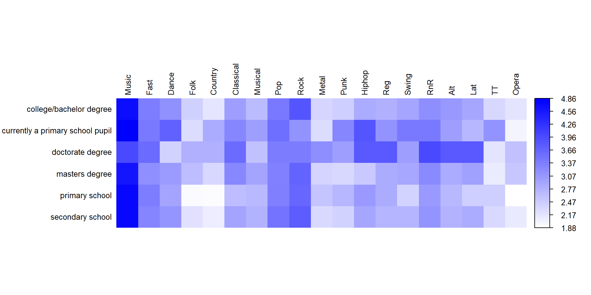
4.3 Analysis
#_________________________________________________
# Computations ----
# Run BADA ----
resBADA <- tepBADA(XYmat, DESIGN = Ymat,
graphs = FALSE)
# Inferences ----
#set.seed(70301) # we had a problem
# with the inference part
# it is addressed iin the Fix from Luke's github
nIter = 889
resBADA.inf <- tepBADA.inference.battery(XYmat,
DESIGN = Ymat,
test.iters = nIter,
graphs = FALSE)
#_________________________________________________
#_________________________________________________In the plot of the observations and the barycenter means, we see doctoral degree and currently a primary school student are distict groups from each other and the other education levels. The rest of the means are near the center of gravity.
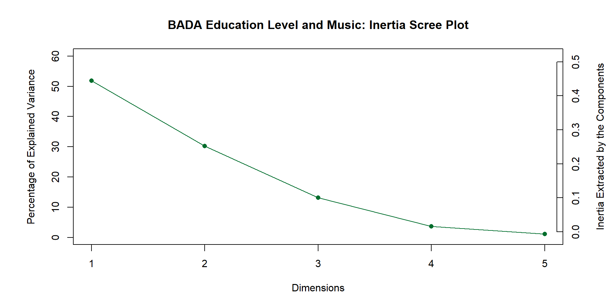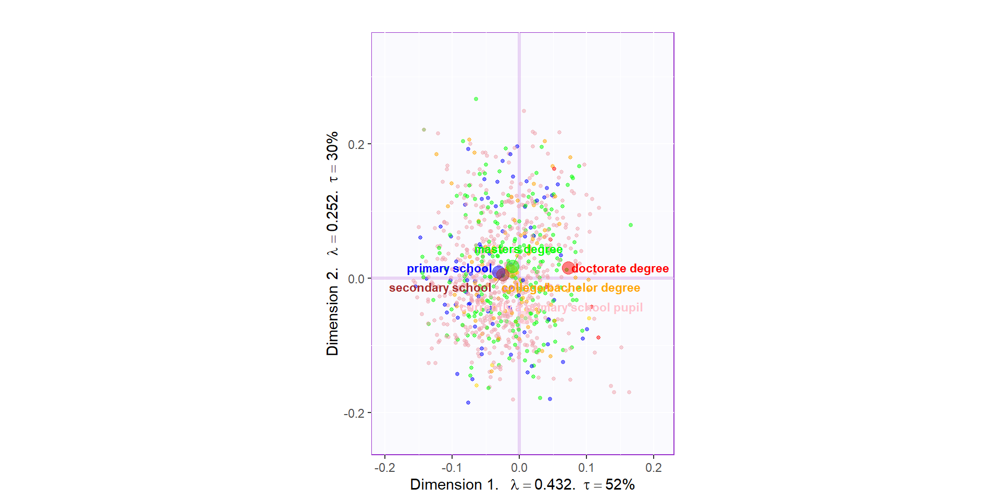
The confidence intervals confirm that currently a primary student is different from all the other education levels as is doctoral degree from all the other education levels.
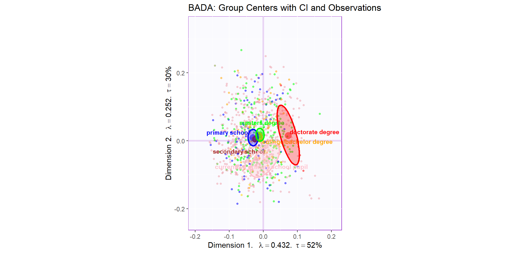
Here we see that Masters degree is different from doctoral degree, secondary school, and currently a primary school student. Secondary school, likewise, is different from doctoral degree, masters degree, and currently a primary school student.
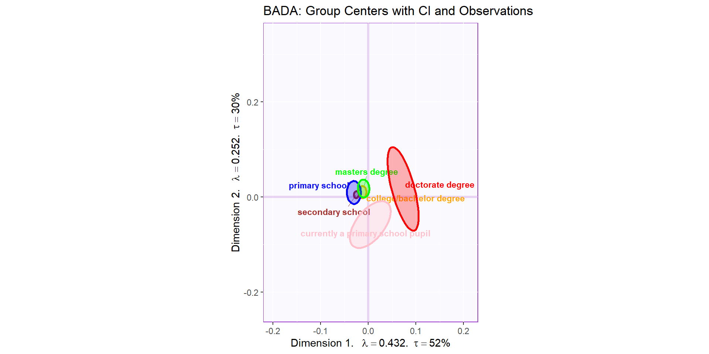
The tolerance intervals shows the the spread of 95% of doctoral degree observations overlap with the groups near the center of gravity as does the spread of 95% of currently a primary school student.
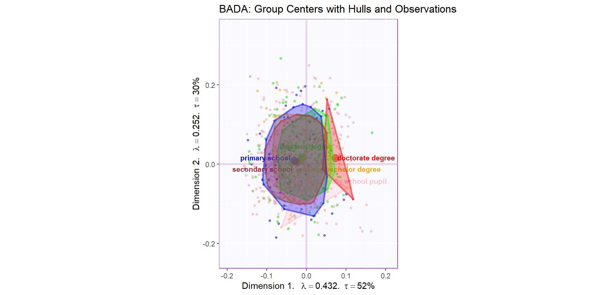
The loading show that doctoral students tend to like Opera, Folk, Latino, Metal, and Alternative while currently a primary student individual prefer Swing, Punk, Hiphop, and Country.
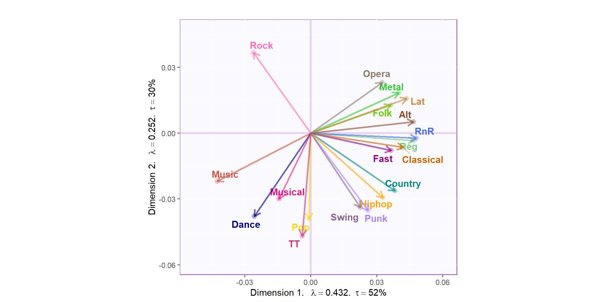
The contribution show that Latino, Alternative, Swing, Punk, Hiphop, and Country are important contributors to the first two dimensions while the bootstrap ratios show that Latino, Alternative, Swing, Hiphop, and Country and stable variables.
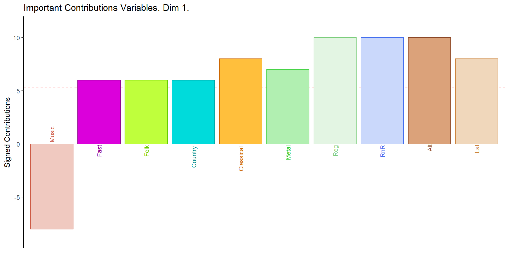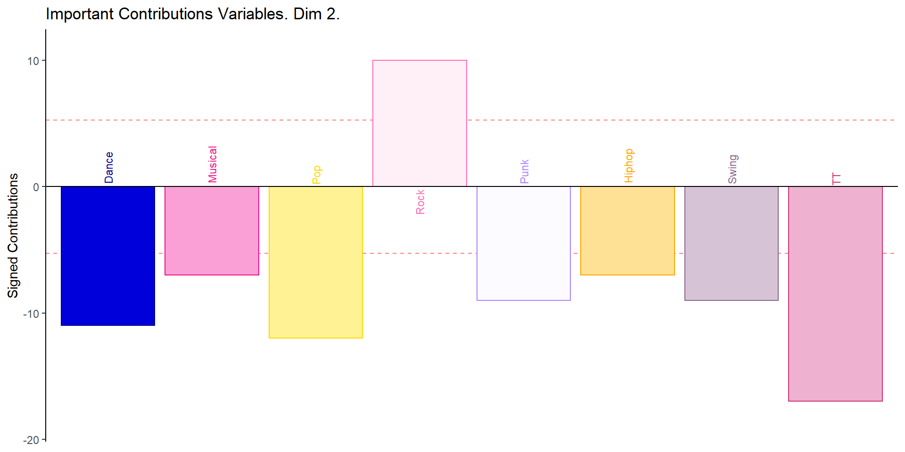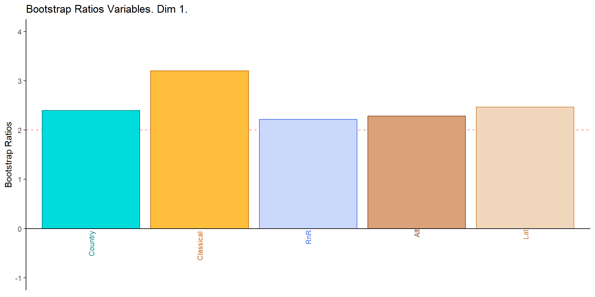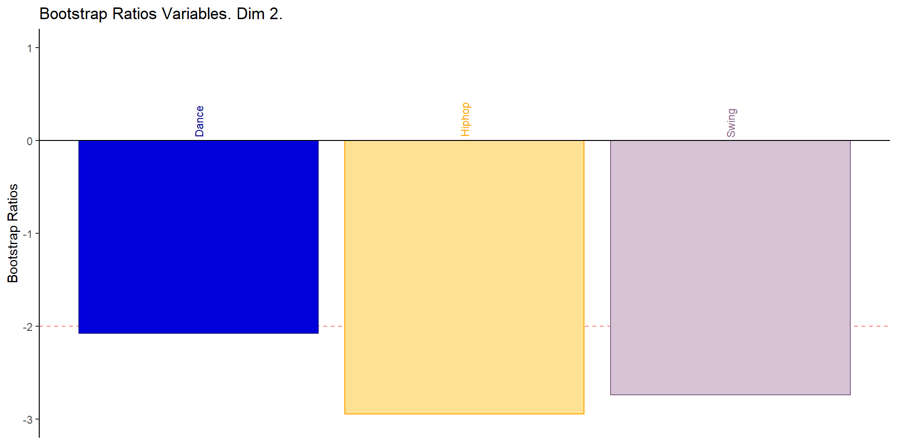
4.4 Fixed Confusion Matrix
According to chance, their is a 0.1667 or 16.67% likelihood to discriminant to the barycenter groups. The fixed confusion matrix predicted at a accuracy of 0.20, which is more than by change. Thus, the level of education is a modest benchmark to classify music preference. The horizontal titles are the actual numbers while the vertical titles are the predicted numbers. The diagonal from the upper left to the bottom right represents the hits while the other values represent the misses.
fixed_cm <-resBADA.inf$Inference.Data$loo.data$fixed.confuse
head(fixed_cm) %>%
kbl() %>%
kable_paper("hover", full_width = F)| .college/bachelor degree | .secondary school | .primary school | .masters degree | .doctorate degree | .currently a primary school pupil | |
|---|---|---|---|---|---|---|
| .college/bachelor degree | 49 | 91 | 9 | 16 | 3 | 2 |
| .secondary school | 54 | 211 | 21 | 20 | 0 | 0 |
| .primary school | 24 | 103 | 22 | 6 | 0 | 0 |
| .masters degree | 53 | 127 | 9 | 30 | 1 | 2 |
| .doctorate degree | 1 | 4 | 0 | 1 | 0 | 0 |
| .currently a primary school pupil | 19 | 33 | 12 | 4 | 1 | 3 |
resBADA.inf$Inference.Data$loo.data$fixed.acc## [1] 0.33834594.5 Random Confusion Matrix
The Random Confusion Matrix only predicted by 0.1664, which under-performed compared to the liklihood by chance alone. The Random Confusion Matrix is a method to mimic training and testing dat sets. It utilizes Jackknife whereby one observation is left out, and a permutation test is run. The BADA is performed on the Leave One Out Data Set and the left out data point is used to minimize the distance to barycenter. Thus, random confusion matrices are a way of validating the fixed confusion matrix through Jackknife and permutation testing.
| .college/bachelor degree.actual | .secondary school.actual | .primary school.actual | .masters degree.actual | .doctorate degree.actual | .currently a primary school pupil.actual | |
|---|---|---|---|---|---|---|
| .college/bachelor degree.predicted | 34 | 92 | 10 | 18 | 3 | 3 |
| .secondary school.predicted | 60 | 208 | 21 | 21 | 0 | 2 |
| .primary school.predicted | 28 | 103 | 21 | 6 | 0 | 0 |
| .masters degree.predicted | 59 | 127 | 9 | 27 | 2 | 2 |
| .doctorate degree.predicted | 2 | 4 | 0 | 1 | 0 | 0 |
| .currently a primary school pupil.predicted | 17 | 35 | 12 | 4 | 0 | 0 |
## [1] 0.3114934.6 Summary
The Scree Plot shows that the first three dimension are important. The main take away from the confidence intervals plot is that currently a primary school student and doctoral student are different from each other and all other groups. However, the random confusion matrix showed a poor accuracy in the prediction strength of the BADA algorithm.